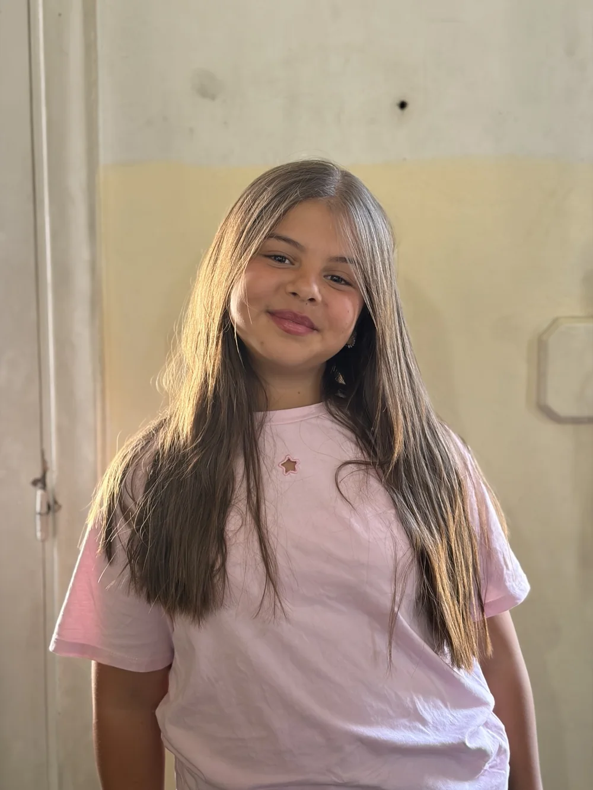

DRAMA ROAD • YOUNG TALENTS
مواهب صغيرة.
مواهب صغيرة.
حضور كبير.
قاعدة مواهب احترافية لقسم الأطفال في Drama Road، مصممة لتسهيل اختيار الممثل المناسب للمخرجين وشركات الإنتاج.
صور أصلية • بيانات منظمة • قابلة للتحديث

20موهبة مسجلة
3–4سنوات تدريب
CASTING SEARCH
اعثر على المرشح المناسب بسرعة
فلترة حسب العمر، مدة الدراسة، الجنس عند توفره، والمهارات.
FEATURED TALENTS
وجوه من Drama Road
ملفات واضحة
العمر، سنوات الدراسة، المهارات، الملاحظات والصورة في مكان واحد.
بحث مخصص للكاستينغ
فلترة سريعة للوصول للمرشحين الأقرب لمتطلبات الدور.
جاهز للتوسع
يمكن إضافة مشاريع جديدة، مواهب جديدة ومعلومات إضافية في أي وقت.
TALENT DATABASE
جميع المواهب
20 موهبة من قسم الأطفال في Drama Road.
PORTFOLIO
الأعمال والمشاريع
سجل أعمال المواهب والأدوار التي شاركوا بها.
MANAGEMENT
إدارة المحتوى
إضافة مواهب ومشاريع جديدة من نفس الجهاز.
مهم: النسخة الحالية تحفظ الإضافات الجديدة داخل متصفح الجهاز فقط. المعلومات الأساسية الـ20 الموجودة في الموقع ثابتة وتظهر للجميع. لنجعل الإضافات الجديدة تظهر لكل الزوار نحتاج ربط قاعدة بيانات سحابية لاحقاً.